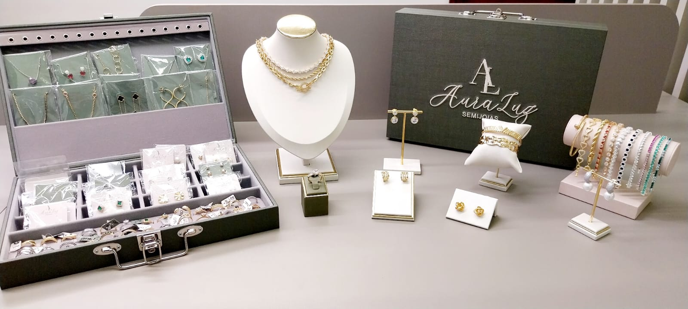
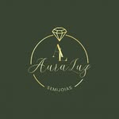
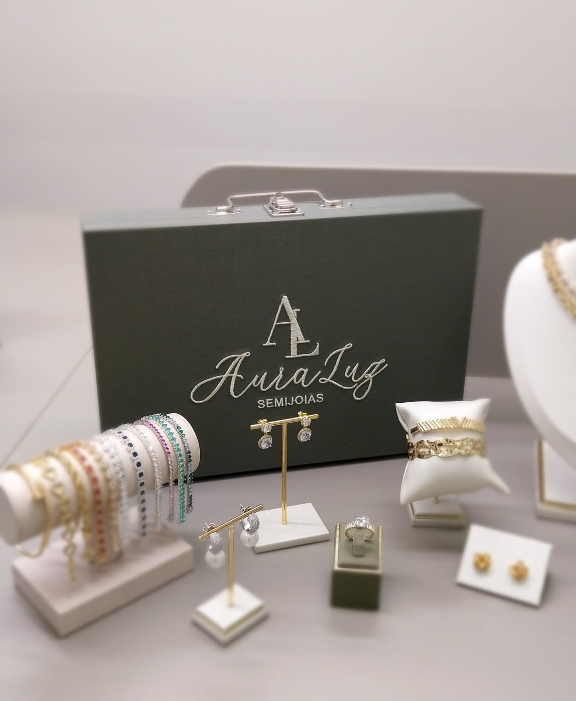
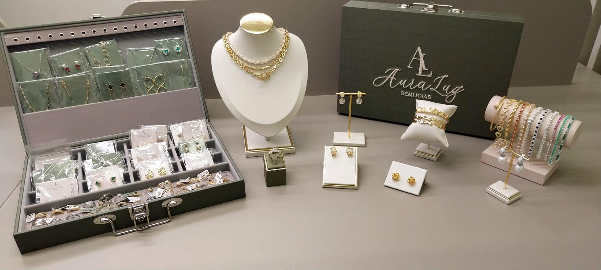
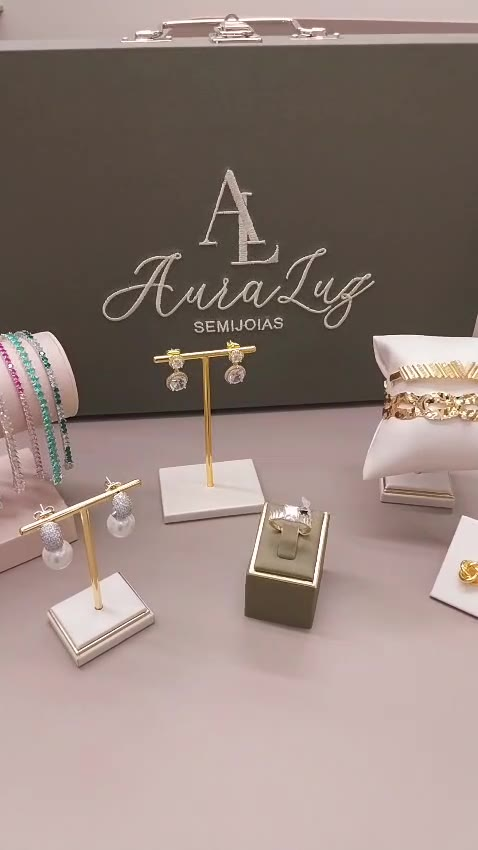

3
fotos aproveitáveis
Maleta, variedade e apresentação geral do mostruário.


AuraLuz + 33KBriefing de produção da landing pageInformações, fotos e vídeos necessários para transformar o MVP de recrutamento em uma landing page pronta para tráfego.
AuraLuz Semijoias · Consignação premiumMaleta, variedade e apresentação geral do mostruário.
Um tour de produto e um criativo vertical com presença humana.
Verde profundo, dourado, marfim e posicionamento premium.
Ainda não há depoimento verificável, prova operacional ou ficha técnica.
Percentual base, faixas por vendas, quando e como a parceira recebe.
Duração, fechamento, devolução, renovação, coleta e reposição.
Perda, dano, furto, inadimplência, venda fiada e meios de pagamento.
Camada/espessura quando aplicável, materiais, níquel, cobertura, exclusões e cuidados.
Embalagens, catálogo, fotos, treinamento, suporte e sistema de controle.
Cidades, limite de maletas, prazo de resposta e responsável por cada lead.
Um corte automático não substitui enquadramento. A composição precisa preservar rosto, mãos, maleta e joias em cada formato.
Hero desktop1920 × 1200 px, pessoa/produto à direita e respiro à esquerda.
Hero mobile1080 × 1350 px, sem cortar rosto, mãos ou maleta.
Vídeo horizontal1920 × 1080, 12–45 s conforme o roteiro.
Vídeo vertical1080 × 1920, rosto no terço superior e produto visível.
Produto e composiçãomínimo 1600 × 1600; macros com 2000 px ou mais.
A hero não deve parecer anúncio de renda fácil. Ela precisa representar competência, relacionamento e elegância.
Sala de estética real, escritório sofisticado ou cenário neutro de atendimento.
Parceira abre a maleta ou apresenta uma peça — sem pose de catálogo.
Segura, receptiva e profissional; roupa coerente com a rotina.

Referência atual
RefazerNova versão: todas as peças desembaladas, etiquetas discretas e luz sem reflexo estourado.
Mínimo 2000 × 2000 px · fundo neutro · foco preciso.
4:5 e 1:1 · versões com respiro para texto.

Marca, tamanho, alça e acabamento exterior.
Do lacre/fecho até todas as categorias visíveis, sem cortes que escondam quantidade.
Como os SKUs são separados, identificados e conferidos.
Maleta na mão, sobre a mesa e integrada ao ambiente profissional.
Como o mostruário entrou na rotina sem atrapalhar o atendimento e que tipo de cliente se interessou.
Como apresenta sem ser insistente e como respeita as regras do ambiente profissional.
Como organiza peças, recebimentos, pós-venda e prestação de contas ao longo dos ciclos.
Seleção, etiqueta, conferência e registro das peças.
Orientação da parceira e conferência conjunta.
Dúvidas, reposição, troca e material de divulgação.
Prestação de contas, devolução e renovação.
Uma sequência contínua de 30–45 segundos, gravada horizontal e verticalmente. Mostrar mãos e processo; ocultar CPF, endereço, telefone e dados de clientes.
Entregar 10–14 fotos + 2 vídeos limpos + 6 takes B-roll.
“Você já construiu confiança. Ela pode abrir uma nova fonte de receita.”
Mostrar como o mostruário complementa a experiência em estética ou beleza.
Macro, uso no corpo, maleta e mecanismo do consignado, com voz da marca.
Avaliação, alinhamento, recebimento, venda e fechamento do ciclo.
| Frente | Fotos | Vídeos | Formato | Prioridade |
|---|---|---|---|---|
| Hero com parceira | 4 principais + 6 variações | 6 takes B-roll | 8:5, 4:5, 16:9, 9:16 | P1 |
| Maleta e mostruário | 8 planos | 2 aberturas contínuas | Horizontal + vertical | P1 |
| Produto premium | 6–10 SKUs × 4 ângulos | 10 macros de 4–6 s | 1:1, 4:5, 9:16 | P1 |
| Parceiras reais | 3 retratos + ambiente | 3 depoimentos de 25–45 s | 4:5 e 9:16 | P1 |
| Operação | 10–14 fotos | 2 vídeos + 6 B-rolls | 16:9 e 9:16 | P2 |
| Suporte e conteúdo | Kit de apoio + telas | 2 gravações de tela | 1:1, 16:9, 9:16 | P2 |
| Identidade | Logo vetorial + aplicações | Animação opcional | SVG, PNG e MP4 | P1 |
P1 = necessário para tráfego · P2 = fortalece conversão e pode entrar na segunda publicação.
LP_AURALUZ_HERO_PARCEIRA_01_8x5.jpg
LP_AURALUZ_PRODUTO_SKU123_MACRO_1x1.jpg
ADS_AURALUZ_CONFIANCA_V1_9x16_SEM-TEXTO.mp4
Cor: sRGB · vídeo: H.264/AAC · versão limpa sempre preservada.
Responder comissão, ciclo, garantia e responsabilidades.
Escolher 3 parceiras, 6–10 SKUs e os cenários.
Executar P1 em um dia e P2 em complemento.
Integrar formulário, revisar provas e ativar tráfego.